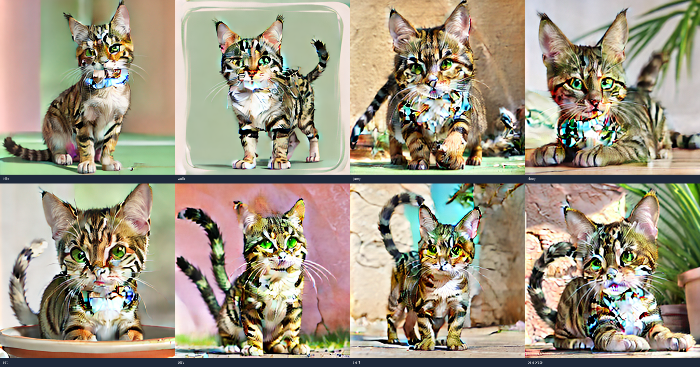

V40.6 自动化视觉验收报告
结论
V40 当前未通过。R6 生成了真实候选，但 0 个候选通过显式视觉审查，V40.4-V40.5 保持 No-Go / blocked。
本报告只证明本轮失败状态可审计，不证明图生高质量动作资产完成。
目标架构与当前实现
- 目标链路：真实样本 -> source/license -> mask/crop -> identity anchors -> action pose controls -> direct local runner -> candidate frame sequence -> visual review -> V39 same-sample comparison。
- 当前已实现：R5 predev audit passed scoped；R6 direct local runner 生成了 2 个同样本候选。
- 当前未达成：候选仍是照片式单帧集合，背景复杂，动作语义弱，不是可进入 V40.4 的高质量桌宠动作资产。
阶段门禁
- V40.3R5：passed scoped。
- V40.3R6：failed，acceptedVisualCount = 0。
- V40.4：blocked，原因是没有两个视觉通过候选。
- V40.5：blocked，原因是没有 accepted V40 pack 可预览或应用。
- V40.7：final failed。
v38_a_cat_public
候选状态：generated，但未通过视觉验收。
V40 contact sheet：docs/V40.x/evidence/assets/v40-3r6-controlled-candidates/v38-a-cat-public-contact-sheet.png

视觉审查：failed；原因：action_semantics_unclear, target_experience_quality_failed
观察：Generated same-sample action images are present as review candidates. The tabby candidate remains photo-like, includes scene/background content, and shows visible style/artifact drift across actions. Each action is represented as a single still image rather than a reviewable multi-frame action sequence. The output is not preferred over the same-sample V39 baseline for desktop-pet target use. Candidate is kept out of V40.4 normalization.
V39 对比：not_better_than_v39；基线：/v39/v38_a_cat_public/contact-sheet.svg
v38_tuxedo_public
候选状态：generated，但未通过视觉验收。
V40 contact sheet：docs/V40.x/evidence/assets/v40-3r6-controlled-candidates/v38-tuxedo-public-contact-sheet.png

视觉审查：failed；原因：action_semantics_unclear, target_experience_quality_failed
观察：Generated same-sample action images are present as review candidates. The tuxedo candidate uses complex indoor photo backgrounds and does not present clean desktop-pet transparent or sprite-like frames. Each action is represented as a single still image rather than a reviewable multi-frame action sequence. The output is not preferred over the same-sample V39 baseline for desktop-pet target use. Candidate is kept out of V40.4 normalization.
V39 对比：not_better_than_v39；基线：/v39/v38_tuxedo_public/contact-sheet.svg
禁止声明
不能声明 V40 passed、任意猫图生动作 ready、Petdex parity、provider verified、WebUI/ComfyUI route verified、production ready、Windows/cross-platform ready。